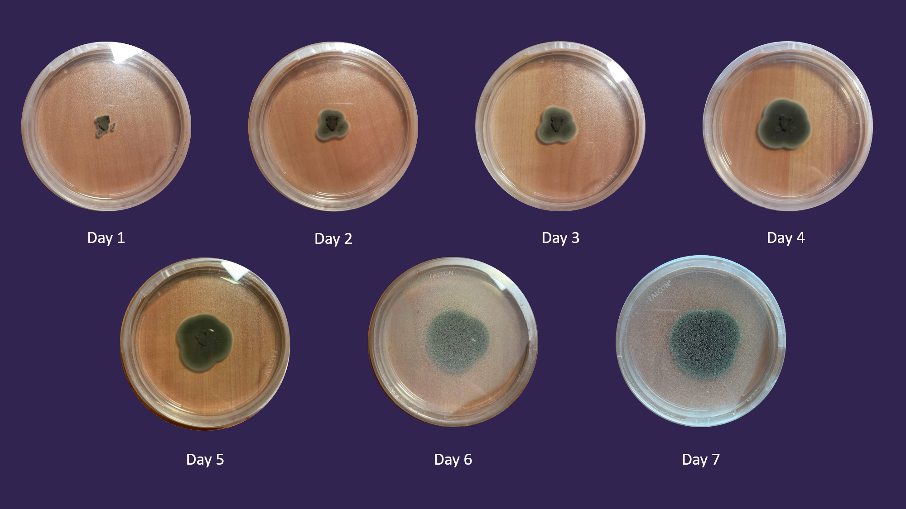

Experiment 1
Description
The goal of the first experiment was to see what temperature would be ideal for the survival of the microbe. In order to test this, I transferred the microbe to three petri dishes. I put one petri dish in my freezer, one petri dish in my refrigerator, and one on my desk as the control plate.
Hypothesis
The microbe will show the most growth in the petri dish being kept in room temperature
Results
Freezer Plate:
Refrigerator Plate:
Room Temperature Plate (Control):
Conclusion
My hypothesis was correct. While the plate kept in room temperature grew at a normal rate, the refrigerator and freezer plates did not show any growth at all. I was a little surprised that the fungus could not grow at all in the refrigerator and was expecting growth similar to that of the room temperature plate but at a slower rate. If I was to redo this experiment, I would try and find a way to test with environments warmer than room temperature. I think the control plate would continue to grow until space runs out, but i'm doubtful that any growth would occur in the plates left in the colder environments. This experiment shows us that the microbe is found in areas with warmer climates or during warmer seasons.